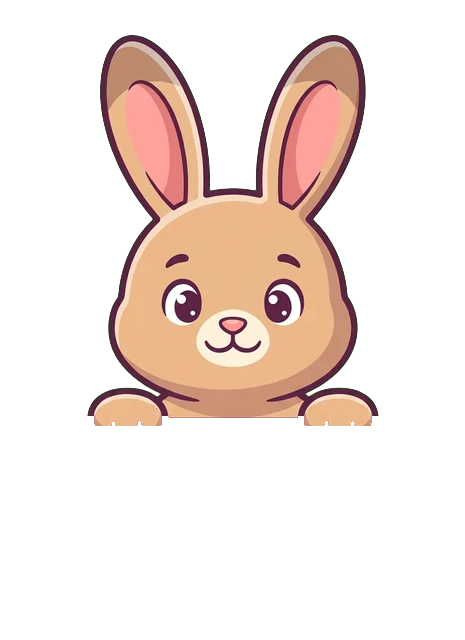
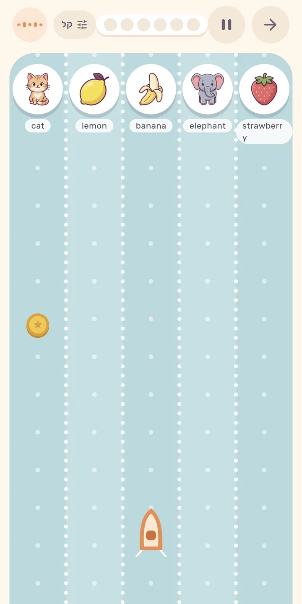
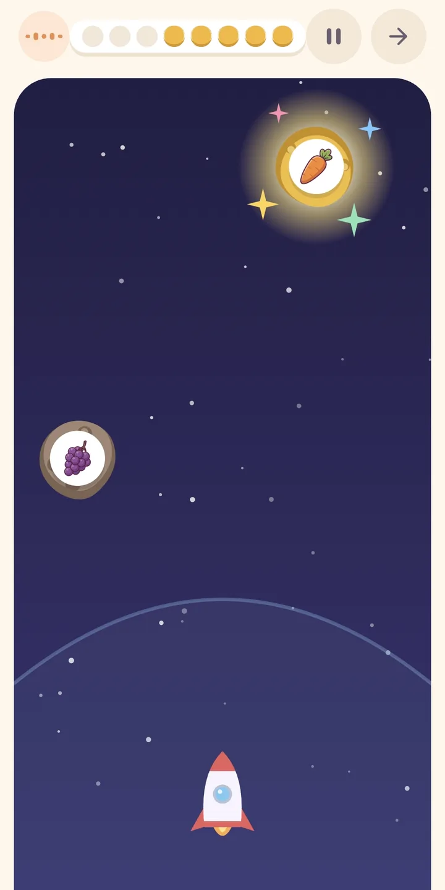
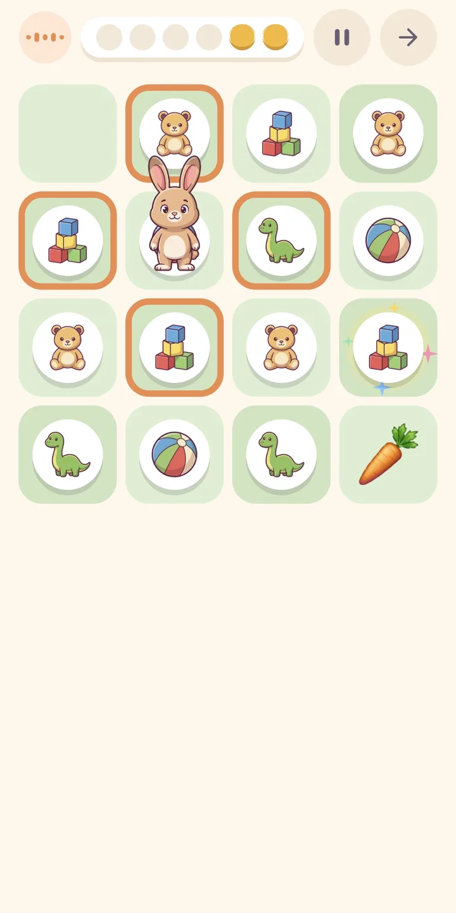
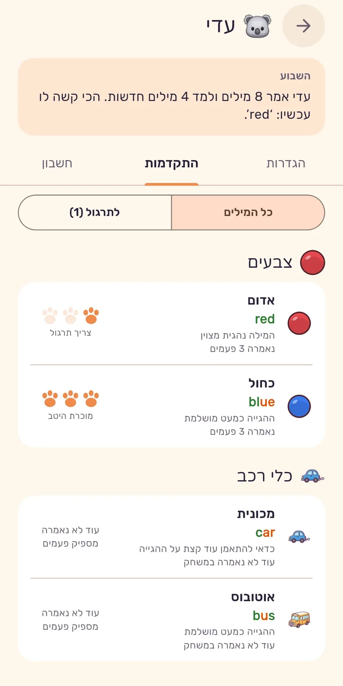
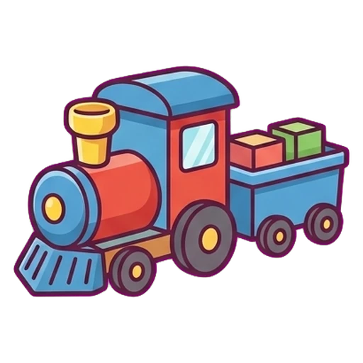
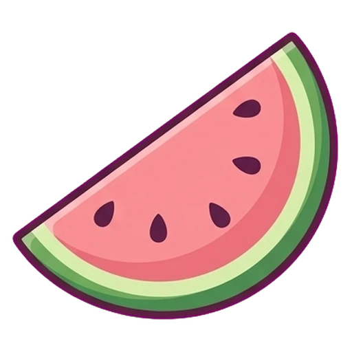

אנגלית שמדברים מהרגע הראשון
לומדים מילה חדשה, משתמשים בה בדיבור תוך כדי משחק, ומגדילים את אוצר המילים בלי להרגיש ובכיף. מתאים גם לילדים שעוד לא יודעים לקרוא בעברית!
- 100 מילים ראשונות באנגלית
- ABC אותיות באנגלית
- 4 משחקי דיבור
- 0 פרסומות
ככה זה נראה אצלנו בסלון
הילד שלנו, הטלפון, וארנב אחד שמחכה שיגידו לו משהו באנגלית.

לגדל ילדים שמשתמשים באנגלית בטבעיות
ילדים שנחשפים לאנגלית באופן פסיבי, בסרטוני יוטיוב או במשחקים של "בחרו את המילה הנכונה", לומדים לזהות את המילה, אבל לא לומדים להגיד אותה.
שימוש במילה בקול מהרגע הראשון נותן ביטחון, עוזר למילה להיכנס לראש, ומעביר לילדים מסר חשוב: אתם יודעים, ואתם יכולים לדבר באנגלית!
מילים חדשות, ושימוש מיידי בדיבור
שיעור בסיילו לוקח רגע: הארנב מלמד שתי מילים, הילד חוזר עליהן, וזהו. עכשיו משחקים! המילים מופיעות בתוך משחקים שבהם הדרך לנצח ולזכות במטבעות היא להגיד אותן.



כאן הילד הוא זה שמדבר
רוב מה שילדים פוגשים במסך פשוט רץ מולם. אפשר לראות שעה של שירים באנגלית ולצאת עם מנגינה בראש ובלי אף מילה. עם סיילו, הדרך היחידה לשחק היא להגיד את המילים בקול. האפליקציה שומעת את המילה ומגיבה, כמו מבוגר שעונה לילד שמנסה מילה חדשה.
מחקרים מראים שילדים קטנים כמעט לא לומדים שפה מסרטון שרץ מולם. הם לומדים כשהם מדברים ומישהו עונה להם, בדיוק כמו שלמדו לדבר כשהיו תינוקות. מה שמשפיע על ההתפתחות השפתית שלהם הוא כמה פעמים הם דיברו וקיבלו תשובה, ולא כמה מילים הם שמעו.

אתם רואים מה נקלט ומה עוד לא
לכל ילד פרופיל משלו, ובאזור ההורים מחכה תמונת מצב שנותנת לכם את כל מה שצריך לדעת על ההתקדמות והלמידה שלו:
- סיכום שבועי במשפט אחדכמה מילים נאמרו, כמה מילים חדשות נלמדו, ואיזו מילה הכי קשה כרגע.
- כל מילה, ואיך היא נשמעתליד כל מילה כתוב אם ההגייה כבר מדויקת או שכדאי להתאמן עליה עוד קצת.
- רשימה של מה לחזקלחיצה אחת מסננת רק את המילים שעוד צריכות תרגול.
- המשחק היומי עושה את זה לבדבכל יום יש משחק שחוזר על המילים שמזמן לא נאמרו ועל אלה שעוד קצת קשות לילד.
למה דווקא עכשיו
ילדים קטנים עוד שומעים צלילים שלנו, המבוגרים, כבר קשה לשמוע. והם לא מתביישים לנסות: ילד בן חמש יגיד elephant בקול רם בלי לחשוב פעמיים.
מחקרים מראים שמי שמתחיל שפה שנייה בילדות מגיע הכי קרוב לרמה של דובר שפת אם. אז לא צריך לחכות לכיתה ג'. אפשר להתחיל בקטן, עכשיו, בכמה דקות ביום.
מאה המילים הראשונות
עשרה נושאים, עשר מילים בכל אחד. מילים שכל ילד פוגש בבית, בגן ובדרך לסבא וסבתא.


איך סיילו התחיל
תמיד היה לנו ברור שנרצה שהילדים ירכשו אנגלית בגיל קטן. נתנו להם לצפות בקוקומלון, להקשיב לסיפורים באנגלית וללחוץ על כפתורים בצעצוע שמקריא את המילה שלוחצים עליה.
ובאמת, גילינו לאט לאט שהם מבינים מילים בצורה טובה, אבל לא יודעים לדבר באנגלית. כולנו מכירים את זה: אנחנו יכולים לצפות בסדרה באנגלית ולהבין כל מילה, ולהתחיל לגמגם בחו"ל כששואלים אותנו שאלה פשוטה וצריך לענות באנגלית.
שמיעה פסיבית ודיבור אקטיבי הם פשוט שני דברים שונים לגמרי.
כדי לעודד אותם לדבר, החלטתי לבנות את סיילו: אפליקציה שלא רק מכירה להם עשרות מילים חדשות, אלא גם מוודאת שהם יודעים להגיד אותן. התוצאות הגיעו מהר. הם התחילו להשתמש במילים באנגלית בעצמם, ולשלב אותן בשיחה היומיומית.
אני רוצה להזמין אתכם להצטרף להרפתקה הזאת, ולתת לילדים שלכם את אחד הכלים הכי חשובים שיש: היכולת לדבר עם אנשים בכל העולם בצורה פשוטה וטבעית.
אבא של עדי ונטע, וסיילו
מתחילים בחינם
אפשר לנסות לפני שמחליטים.
חינם
בלי הגבלת זמן
- השלב הראשון בצבעים ובחיות
- כל המשחקים
- דוח ההתקדמות להורים
הגרסה המלאה
תשלום אחד · נפתחת מאזור ההורים
- כל מאה המילים, בכל עשרת הנושאים
- כל אותיות ה־ABC
- ללא מגבלה על מספר הילדים
- כל השלבים והמשחקים
שאלות שהורים שואלים
לאיזה גיל זה מתאים?
לגילאי 3 עד 10. הקטנים יותר ילמדו וישחקו יחד עם ההורים (חוויה כיפית!), והגדולים יכולים ללמוד ולשחק לגמרי לבד.
יש באפליקציה גם מצב נעילה, שדואג שהילד לא יצא ממנה וימצא את עצמו ביוטיוב (או במייל של העבודה שלכם...).
הילד עוד לא יודע לקרוא. זה בעיה?
בכלל לא. הכול בקול ובתמונות: הארנב אומר את המילה, מראה ציור, והילד עונה בקול. אין מה לקרוא ואין מה להקליד.
אנחנו לא מדברים אנגלית טוב בבית. זה יעבוד?
בטח. ההורים לא צריכים לדעת אנגלית. האפליקציה כולה בעברית ומשלבת את המילים באנגלית בצורה ידידותית, כך שהיא מתאימה גם למי שמגיע בלי שום ידע קודם.
כמה זמן ביום?
תלוי בגיל של הילד, בסבלנות וביכולת הריכוז. מומלץ שיעור או שניים ביום, עם כמה משחקים לתרגול: בסך הכול בערך רבע שעה. מניסיון, ילדים גדולים יכולים לשחק גם חצי שעה ויותר.
מה עם הפרטיות של הילד?
הזיהוי של מה שהילד אומר קורה בטלפון עצמו, ולא נשלח לשרתים שלנו. הקול שלו לא נשמר: מה שהוא אומר תוך כדי משחק נעלם מיד, בלי אפשרות שחזור.
צריך אינטרנט?
רק בפעם הראשונה, כשההורה מתחבר. מעבר לזה הכול קורה בטלפון עצמו, כך שאפשר לשחק גם בדרך לאילת.
תנו לו ללמוד את המילה הראשונה כבר הערב!
להורדה ב-Google Playעל מה זה מבוסס
- Kuhl, P. K., Tsao, F.-M., & Liu, H.-M. (2003). Foreign-language experience in infancy. PNAS, 100(15), 9096–9101.
- Roseberry, S., Hirsh-Pasek, K., & Golinkoff, R. M. (2014). Skype me! Socially contingent interactions help toddlers learn language. Child Development, 85(3).
- Romeo, R. R., et al. (2018). Beyond the 30-million-word gap. Psychological Science, 29(5), 700–710.
- Hartshorne, J. K., Tenenbaum, J. B., & Pinker, S. (2018). A critical period for second language acquisition: Evidence from 2/3 million English speakers. Cognition, 177, 263–277.
- Skene, K., et al. (2022). Can guidance during play enhance children's learning and development in educational contexts? Child Development, 93(4), 1162–1180.
- Hirsh-Pasek, K., et al. (2015). Putting education in "educational" apps. Psychological Science in the Public Interest, 16(1).